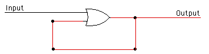
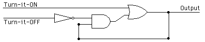
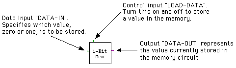
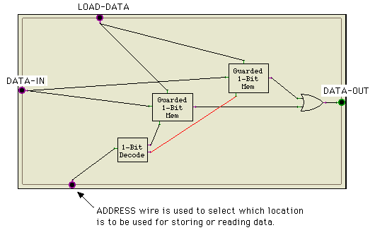
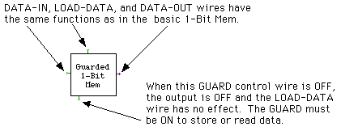

Labs for The Most Complex Machine
xLogicCircuits Lab 2: Memory Circuits
THIS LAB CONTINUES THE STUDY OF CIRCUITS built from logic gates, which was begun in the previous lab. That lab showed how circuits can be built to perform arithmetic and logical computations with binary numbers. Such computations are one of the major functions of computers. But computers also need at least two other abilities. They need memory -- the ability to store and retrieve data. And they need control -- the ability to control what data is stored where, which computations are performed, and in what order. A program specifies a series of computations to be performed by a computer; the computer stores program and data in its memory, and the computer executes the program under its own control, without any further direction from its user or programmer. You already have some idea how circuits can perform computations. In this lab, you'll see how logic gates can be used to build memory circuits that can store binary numbers (which are used to represent both programs and data). As for control functions, they can also be implemented with gates and wires. There were some hints of this in the previous lab, and you'll see more in this lab. However, the full mystery of how a computer can execute a program all on its own will not be solved until future labs.
The material in this lab is also covered in Sections 2.3 and 3.1 of The Most Complex Machine. Not everything in the book is repeated here. As usual, you will find it useful to read the book before doing the lab. You also definitely need to do the previous lab before this one.
This lab includes the following sections:
You'll be using the xLogicCircuits applet in this lab. Start by clicking the button to launch the applet in its own window:
(For a full list of labs and applets, see the index page.)
Circuits that Remember
You've seen that a circuit that does not have any feedback loops simply takes the values from its inputs and computes an output value based on those inputs. Changing the values on the input wires will change the output values -- after just a very short delay for the signal to pass through the circuit. Such circuits have no "memory." The output is computed based on the current inputs, and anything that happened to the circuit in the past has no effect.
In this lab, we are interested in circuits that have some memory of what happened to them in the past. That is, the output of the circuit is not based solely on the current inputs. It can also depend on inputs that were given to the circuit in the past. Memory circuits include feedback loops. A feedback loop occurs when the output from a gate is connected back to an input of the same gate -- possibly through one or more other gates. Such a loop allows previous inputs to affect current outputs. This is exactly what we need for memory circuits.
The xLogicCircuits applet is set up to load several examples. You should see three sample circuits on the circuit board. Each of these is a simple circuit containing a feedback loop. You should turn on the power and experiment with these circuits.
The first circuit consists of a NOT gate, with its output connected back to its input. What happens to this circuit when you turn on the power? This is not what I would call a memory circuit! It shows that not every circuit that contains a feedback loop can properly be called a memory circuit. (In fact, building memory circuits is a pretty touchy affair.) However, even this simple example of a feedback loop turns out to be useful and interesting, as you'll see in some of the exercises at the end of the lab.
The second example on the circuit board is an OR gate whose output is fed back to one of its inputs:

The other input to the OR gate is under your control. As soon as you turn this input on, the feedback loop turns on and the output of the circuit comes on. After that, you can turn the input off and on as much as you want. The output stays on (until you turn off the power to the circuit). The circuit "remembers" that its input has been turned on sometime in the past. This is interesting, but it would be nice to have a way of turning the circuit off. The third example on the circuit board shows how this can be done:

This circuit also contains an OR gate in a feedback loop, but now an AND gate has been inserted into the loop. If you turn the input labeled "Turn-it-ON" on and then off, the feedback loop and the output of the circuit will come ON. If you turn the other input, labeled "Turn-it-OFF," on and then off, the loop and output will go OFF. This circuit remembers which of its inputs was most recently turned on and off. Since we want to work with binary numbers, we think of ON as representing one and OFF as representing zero. We say that we store one in the circuit by turning the top input on and off, and that we store zero in the circuit by turning the lower input on and off. The circuit stores the value zero or one. You can check which value it is storing just by looking at its output. You can set the value that it is storing by manipulating its inputs. This simple memory circuit is the basic building block for most of what you will see in this lab.
In the previous lab, you saw that it is often convenient to think of some inputs to a circuit of as carrying data into the circuit, while other inputs are used to control the circuit. The circuit itself doesn't really make any distinction between two different types of inputs, but it useful for designers of circuits to distinguish between data inputs and control inputs depending on what functions the inputs serve in their circuit design. All the circuits that you see in the rest of this lab follow the following convention:
- Circuit outputs are on the right edge of the circuit.
- Data inputs are on the left edge of the circuit.
- Control inputs are on the top and bottom edges of the circuit.
In the simple memory circuit discussed above, it is not really clear to me whether the two input wires are data inputs or control inputs. For this reason -- and also because it will fit better into the design of other circuits -- we will use a modified version of this memory circuit for the rest of the lab. The basic memory circuit that we will use is in the example called "1-Bit Mem". You'll find this circuit in the scrolling pallette in the xLogicCircuits applet. (Remember that you can use the circuits in the pallette as building blocks in other circuits simply by dragging them onto the circuit board. You can also see inside any iconified circuit; just click on the circuit to hilite it and then click the "Enlarge" button.)
The one-bit memory circuit can store one bit, either zero or one. You won't need to understand the inside of this circuit, but it important that you understand how it is used. The circuit has one data input, one control input, and one output. I refer to these as DATA-IN, LOAD-DATA, and DATA-OUT:

To store a value in the circuit, turn the DATA-IN wire ON or OFF to represent the value (ON for one or OFF for zero). Turn LOAD-DATA on and off. (You have to do this slowly enough to allow the circuit time to react.) When you turn LOAD-DATA on, the value from DATA-IN will flow into the circuit. When you turn LOAD-DATA off, the value in the circuit will be "locked" and cannot change until the next time LOAD-DATA is turned on. You can always check what value is stored in the circuit by looking at its output wire, DATA-OUT.
Open the "1-Bit Mem" circuit, turn on the power, and work with it to make sure that you know how to use it.
Registers
With the basic one-bit memory as a starting point, you can build more complex memory circuits. Just as you can line up several "Adder" circuits to get a multibit addition circuit, you can combine several one-bit memory circuits to get a multibit memory circuit. As one of the exercises at the end of the lab, you will construct a 4-bit memory circuit. A 4-bit memory circuit can store a 4-bit binary number. Similarly, you can build memory circuits to store 8-bit binary numbers, 16-bit numbers, or any number of bits. Memory circuits of this type are important components in the central processing unit of a computer. A memory circuit that is used in the central processing unit to store a binary number is called a register. Multibit memory circuits can also be used in the main memory of a computer. Recall that main memory contains a sequence of numbered locations. Each location stores a binary number, so each location can be a simple multibit memory circuit.
For some purposes, a more sophisticated type of multibit memory is needed. As an example, look at the "Count Reg" circuit, which you will find in the pallette of the xLogicCircuits applet. This circuit is a register that counts in binary. Turn its control wire on and off several times (allowing, as always, enough time for the circuit to respond). As you keep turning the control wire ON and OFF, the three outputs of the circuit will cycle through the values 000, 001, 010, 011, 100, 101, 110, 111, and back to 000. (Read the outputs from bottom to top.) If you convert these binary numbers to decimal numbers, the circuit is counting from zero to seven. A count register of this sort could be used in a CPU to count off the steps in a computation, for example.
The count register is made from three "Flip Flop" circuits. It is not important for you to understand how a flip-flop works, but if you look inside, you'll see that it is made from two interconnected one-bit memories of the type you have seen above. In fact, a flip-flop is itself a kind one-bit memory, but it can do things that the simpler one-bit memory cannot -- such as count. The count register is used in one of the exercises at the end of the lab, but mainly it is here to show you that registers can be made to do more than just store numbers.
Random Access Memory
A random access memory, or RAM, is a memory circuit that can hold several different binary numbers. Each binary number is stored in a separate location. The locations are numbered 0, 1, 2, 3, and so on. The number of a location is called its address. Every computer has a RAM, which it uses as a main memory where it stores the data and programs that it is working with. A RAM can have any given number of locations. (In a typical computer, the RAM has several million locations.) The binary numbers that are stored in a RAM can have any given number of bits. (In a typical modern computer, each location holds an eight-bit binary number.)
In this section, you'll see how a very simple RAM can be constructed. The RAM you will look at has only two locations, and each location holds just a single bit. The exercises at the end of the lab will investigate how larger and more useful RAM's can be built.
The sample RAM is named "2-Bit RAM". It is one of the sample circuits loaded by the xLogicCircuits applet. Find it in the applet's pallette and open it. You'll see a circuit with one data input, two control inputs, and one output:

The ADDRESS wire picks out one of the two locations in the RAM. When the ADDRESS wire is OFF, one location is used (the location "with address zero"). When the ADDRESS wire is ON, the other location is used (the location "with address one"). The DATA-OUT wire shows the contents of the selected location. Turning the LOAD-DATA wire on and off stores a value in the selected location. The DATA-IN wire specifies the value that is to be stored.
For example, suppose you want to store a 1 in location 0. Then you should:
- Turn the DATA-IN wire ON, representing the value 1.
- Turn the ADDRESS wire OFF, representing the address of location 0.
- Turn the LOAD-DATA wire ON.
- Wait long enough for the signals to propagate through the circuit.
- Turn the LOAD-DATA wire OFF.
To read the value stored in location 0, all you have to do is turn the ADDRESS wire OFF to represent the address of the location you want to read. The value stored in location 0 will appear on the DATA-OUT wire.
If you want to work with location 1 instead of with location 0, all you have to do is turn the ADDRESS wire ON.
A real RAM should have more than one ADDRESS wire. Every combination of values that can be put on the ADDRESS wires specifies a different address. For example, if there are three address wires, they can be set to any of the eight combinations OFF-OFF-OFF, OFF-OFF-ON, OFF-ON-OFF, OFF-ON-ON, ON-OFF-OFF, ON-OFF-ON, ON-ON-OFF, and ON-ON-ON. These combinations represent the binary numbers 000, 001, 010, 011, 100, 101, 110, and 111. In ordinary decimal notation, they represent 0, 1, 2, 3, 4, 5, 6, and 7. So, a RAM with three ADDRESS wires can have eight locations, numbered 0 through 7. Twenty ADDRESS wires are enough to specify over a million locations, and thirty ADDRESS wires can specify over a billion.
You should spend some time understanding how to use the "2-Bit RAM" and how it works. Each of the two locations in the RAM is a "Guarded 1-Bit Mem" circuit. This circuit is similar to the basic "1-Bit Mem" circuit that you looked at above, but it has an addition control input, called the GUARD:

When the GUARD of a location is ON, that location is selected. When it is selected, it outputs its stored value on its DATA-OUT wire, and its LOAD-DATA wire can be used to store a new value in it. When the GUARD is OFF, the "Guarded 1-Bit Mem" is inert. It ignores its LOAD-DATA wire and leaves its DATA-OUT wire turned OFF.
The "1-Bit Decode" is used to make sure that exactly one of the two locations is selected at any given time. The ADDRESS wire is used as input to the Decode circuit. The Decode circuit has two outputs. When the ADDRESS wire is OFF, the Decode circuit turns its lower output ON, and this in turn selects one of the "Guarded 1-Bit Mem" circuits. When the ADDRESS wire is ON, the Decode circuit turns its upper output ON, and this in turn selects the other "Guarded 1-Bit Mem" circuit. Thus, the Decode circuit decodes the ADDRESS to decide which location to select.
Finally, the OR gate is necessary so that both locations will be able to send their output to the DATA-OUT wire of the RAM. You can't connect two wires to one output. Using the OR gate allows either of the "Guarded 1-Bit Mem" circuits to turn on the output.
Exercises
Exercise 1: A clock in a computer is a component that "ticks" by turning its output wire on and off. This regular ticking can be used as a signal by other components in the computer. Open the sample circuit "Clock" in the applet that you launched above. This example is a clock that will start ticking (by turning its output on and off) as soon as you turn the power off. However, you can stop the ticking by turning on the clock's control wire at the top of the circuit. Turning this control wire off will restart the clock. Write a few paragraphs explaining exactly how this circuit works. Why does the clock tick? What process does the clock go through as it turns its output on, then off, then back on? What is the role of the OR gate? (Note: The "Tacks" in the feedback loop serve to slow the ticking down, because in this simulated circuit, it takes a bit of time for a signal to propagate from one Tack, along a wire, to the next Tack. In a real circuit, the length of the feedback loop could be used to control how long a signal takes to circle the loop.)
Exercise 2: This is a continuation of Exercise 1. As an example of using the signal from a clock to drive another component, build a circuit in which the output from a "Clock" circuit is connected to the control wire of a "Count Reg" circuit. The circuit you build should have three outputs, which are connected to the outputs from the Count Register. It should also have one control input, which is connected to the Clock's control wire. When you turn the power on, the ticking of the Clock will make the Count Register count, and it will do so as long as the control wire is turned off. This circuit just counts up to 7 before it goes back to zero. How would you make a circuit that counts up to 15 before it goes back to zero?
Exercise 3: One of the sample circuits, "1-Bit Mem", is capable of storing a one-bit binary number. Construct a four-bit memory that can store a four-bit binary number. It can be built using four copies of "1-Bit Mem". Your circuit should have four DATA-IN wires and four DATA-OUT wires. However, it should have only one LOAD-DATA control wire. You want to load data from the DATA-IN wires into all the "1-Bit Mem" circuits at the same time. This will be done by turning the single LOAD-DATA wire on and off.
Exercise 4: This continues Exercise 3. Explain in detail how you would store the binary number 1011 in the four-bit memory that you constructed for Exercise 3. Also, explain carefully what it means to say that this value is "stored" in the memory.
Exercise 5: This exercise uses the four-bit memory that you built for Exercise 3. One of the examples in this lab was a "2-Bit RAM" circuit that can store two one-bit numbers. It stores one number in each of two locations, and an ADDRESS wire is used to determine which of the two locations is in use. Suppose that you want to store a four-bit number in each of two locations. The circuit would be very similar to the "2-Bit RAM" but it would have four Inputs and four Outputs. It would still have just one LOAD-DATA control wire and one ADDRESS wire to select between the two locations. For this exercise, you should build such a circuit. You can start with your four-bit memory. Use it to build a "Guarded 4-Bit Mem" modeled on the "Guarded 1-Bit Mem" from the "2-Bit RAM" circuit. Then use two copies of the "Guarded 4-Bit Mem" to construct a RAM with two locations. Test your circuit by storing a different four-bit number in each location. Explain how you can check that your circuit has stored the numbers correctly.
Exercise 6: The "2-Bit RAM" sample circuit uses a "1-Bit Decode" circuit. This circuit has one input and two outputs. It "decodes" its input by turning one of its outputs on when its input is ON and by turning the other output on if the input is OFF. Similar decoder circuits with more inputs are also useful. For this exercise, build a two-bit decoder circuit. Your circuit should have two Inputs and four Outputs. The two inputs can have any of the following pairs of values: 00, 01, 10, or 11. Each of these pairs corresponds to one of the Outputs. The decoder circuit should turn on a different output for each pair of inputs. That is, if the inputs have the value 00 (both OFF), then the circuit should turn on its first Output; if the Inputs have the value 01, it should turn on its second Output; and so on. So at any given time, exactly one of the outputs will be ON. (This is a fairly simple circuit. Begin by finding a Boolean algebra expression for each of the outputs.)
Exercise 7: This is a continuation of Exercise 6. The two-bit decoder circuit that you built for Exercise 6 can be used as a component in a four-location RAM. The four locations in the RAM will be "Guarded 1-Bit Mem" circuits. The RAM will have two ADDRESS wires, which connect to the two inputs of the decoder. The four outputs from the decoder should connect to the GUARD wires of the four "Guarded 1-Bit Mem" circuits. This allows the values on the ADDRESS wires to be used to select one of the four locations. For this exercise, build such a four-location RAM. (As in the original "2-Bit RAM" example, each location should hold just one bit.)
Exercise 8: Based on your work in Exercises 5 and 7, explain how it would, in principle, be possible to build a RAM containing any given of locations, with any given number of bits in each location.
Exercise 9: Write a short essay explaining what you learned in this lab about constructing complex circuits from subcircuits.
This is one of a series of labs written to be used with The Most Complex Machine: A Survey of Computers and Computing, an introductory computer science textbook by David Eck. For the most part, the labs are also useful on their own, and they can be freely used and distributed for private, non-commercial purposes. However, they should not be used as a formal part of a course unless The Most Complex Machine is also adopted for use in that course.--David Eck (eck@hws.edu), Summer 1997